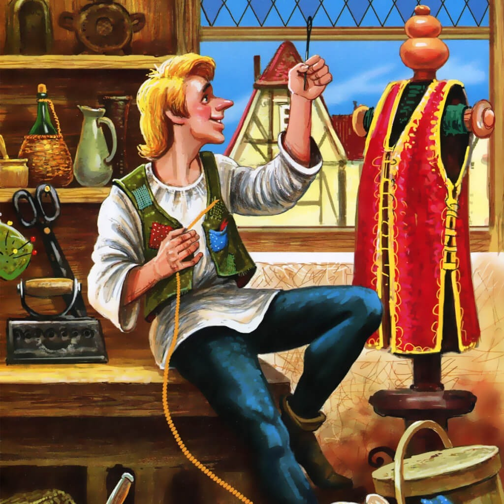

Храбрый портной
Братья Гримм
В одном немецком городе жил портной. Звали его Ганс. Целый день сидел он на столе у окошка, поджав ноги, и шил. Куртки шил, штаны шил, жилетки шил.
Вот как-то сидит портной Ганс на столе, шьёт и слышит — кричат на улице:
— Варенье! Сливовое варенье! Кому варенья?
“Варенье! — подумал портной. — Да ещё сливовое. Это хорошо”.
Подумал он так и закричал в окошко:
— Тётка, тётка, иди сюда! Дай-ка мне варенья.
Купил он этого варенья полбаночки, отрезал себе кусок хлеба, намазал его вареньем и стал жилетку дошивать.
“Вот, — думает, — дошью жилетку и варенья поем”.
А в комнате у портного Ганса много-много мух было — прямо не сосчитать сколько. Может, тысяча, а может, и две тысячи.
Почуяли мухи, что вареньем пахнет, и налетели на хлеб.
— Мухи, мухи, — говорит им портной,- вас-то кто сюда звал? Зачем на моё варенье налетели?
А мухи его не слушают и едят варенье. Тут портной рассердился, взял тряпку да как ударит тряпкой по мухам — семь сразу убил.
— Вот какой я сильный и храбрый! — сказал портной Ганс. — Об этом весь город должен узнать. Да что город! Пусть весь мир узнает. Скрою-ка я себе новый пояс и вышью на нём большими буквами: “Когда зол бываю, семерых убиваю”.
Так он и сделал. Потом надел на себя новый пояс, сунул в карман кусок творожного сыру на дорогу и вышел из дому.
У самых ворот увидел он птицу, запутавшуюся в кустарнике. Бьётся птица, кричит, а выбраться не может. Поймал Ганс птицу и сунул её в тот же карман, где у него творожный сыр лежал.
Шёл он, шёл и пришёл наконец к высокой горе. Забрался на вершину и видит — сидит на горе великан и кругом посматривает.
— Здравствуй, приятель, — говорит ему портной. — Пойдём вместе со мной по свету странствовать.
— Какой ты мне приятель! — отвечает великан. — Ты слабенький, маленький, а я большой и сильный. Уходи, пока цел.
— А это ты видел? — говорит портной Ганс и показывает великану свой пояс.
А на поясе у Ганса вышито крупными буквами: “Когда зол бываю, семерых убиваю”.
Прочитал великан и подумал: “Кто его знает — может, он и вправду сильный человек. Надо его испытать”.
Взял великан в руки камень и так крепко сжал его, что из камня потекла вода.
— А теперь ты попробуй это сделать, — сказал великан.
— Только и всего? — говорит портной. — Ну, для меня это дело пустое.
Вынул он потихоньку из кармана кусок творожного сыра и стиснул в кулаке. Из кулака вода так и полилась на землю.
Удивился великан такой силе, но решил испытать Ганса ещё раз. Поднял с земли камень и швырнул его в небо. Так далеко закинул, что камня и видно не стало.
— Ну-ка, — говорит он портному, — попробуй и ты так.
— Высоко ты бросаешь, — сказал портной. — А всё же твой камень упал на землю. Вот я брошу, так прямо на небо камень закину.
Сунул он руку в карман, выхватил птицу и швырнул её вверх. Птица взвилась высоковысоко в небо и улетела.
— Что, приятель, каково? — спрашивает портной Ганс.
— Неплохо, — говорит великан.- А вот посмотрим теперь, можешь ли ты дерево на плечах снести?
Подвёл он портного к большому срубленному дубу и говорит:
— Если ты такой сильный, так помоги мне вынести это дерево из лесу.
— Ладно, — ответил портной, а про себя подумал: “Я слаб, да умён, а ты глуп, да силён. Я всегда тебя обмануть сумею”.
И говорит великану:
— Ты себе на плечи только ствол взвали, а я понесу все ветви и сучья. Ведь они потяжелее будут.
Так и сделали. Великан взвалил себе на плечи ствол и понёс. А портной вскочил на ветку и сел на неё верхом. Тащит великан на себе всё дерево, да ещё и портного в придачу. А оглянуться назад не может — ему ветви мешают.
Едет портной Ганс верхом на ветке и песенку поёт:
Как пошли наши ребята
Из ворот на огород…
Долго тащил великан дерево, наконец устал и говорит:
— Слушай, портной, я сейчас дерево на землю сброшу. Устал я очень.
Тут портной соскочил с ветки и ухватился за дерево обеими руками, как будто он всё время шёл позади великана.
— Эх ты! — сказал портной великану. — Такой большой, а силы. видать, у тебя мало.
Оставили они дерево и пошли дальше. Шли, шли и пришли наконец в пещеру. Там у костра сидели пять великанов, и у каждого в руках было по жареному барану.
— Вот, — говорит великан, который привёл Ганса, — тут мы и живём. Забирайся-ка на эту кровать, ложись и отдыхай.
Посмотрел портной на кровать и подумал:
“Ну, эта кровать не по мне. Чересчур велика”.
Подумал он так, нашёл в пещере уголок потемнее и лёг спать. А ночью великан проснулся, взял большой железный лом и ударил с размаху по кровати.
— Ну, — сказал великан своим товарищам, — теперь-то я избавился от этого силача.
Встали утром все шестеро великанов и пошли в лес деревья рубить. А портной тоже встал, умылся, причесался и пошёл за ними следом.
Увидели великаны в лесу Ганса и перепугались. “Ну, — думают,- если мы даже ломом железным его не убили, так он теперь всех нас перебьёт”.
И разбежались великаны в разные стороны.
А портной посмеялся над ними и пошёл куда глаза глядят.
Шёл он, шёл и пришёл наконец к ограде королевского дворца. Там у ворот лёг на зелёную траву и крепко заснул.
А пока он спал, увидели его королевские слуги, наклонились над ним и прочитали у него на поясе надпись: “Когда зол бываю, семерых убиваю”.
— Вот так силач к нам пришёл! — сказали они. — Надо королю о нём доложить.
Побежали королевские слуги к своему королю и говорят:
— Лежит у ворот твоего дворца силач. Хорошо бы его на службу взять. Если война будет, он нам пригодится.
Король обрадовался.
— Верно, — говорит, — зовите его сюда. Выспался портной, протёр глаза и пошёл
служить королю.
Служит он день, служит другой. И стали
королевские воины говорить друг другу:
— Чего нам хорошего ждать от этого силача? Ведь он, когда зол бывает, семерых убивает. Так у него и на поясе написано.
Пошли они к своему королю и говорят:
— Не хотим служить с ним вместе. Он всех нас перебьёт, если рассердится. Отпусти нас со службы.
А король уже и сам пожалел, что взял такого силача к себе на службу.
“А вдруг, — думал он, — этот силач и в самом деле рассердится, воинов моих перебьёт, меня зарубит и сам на моё место сядет?.. Как бы от него избавиться?”
Позвал он портного Ганса и говорит:
— В моём королевстве в дремучем лесу живут два разбойника, и оба они такие силачи, что никто к ним близко подойти не смеет. Приказываю тебе найти их и одолеть. А в помощь тебе даю сотню всадников.
— Ладно, — сказал портной. — Я, когда зол бываю, семерых убиваю. А уж с двумя-то разбойниками я и шутя справлюсь.
И пошёл он в лес. А сто королевских всадников за ним следом поскакали.
На опушке леса обернулся портной к всадникам и говорит:
— Вы, всадники, здесь подождите, а я с разбойниками сам справлюсь.
Вошёл в чащу и стал оглядываться кругом. Видит — лежат под большим деревом два разбойника и так храпят во сне, что над ними ветки колышутся. Портной, не долго думая, набрал полные карманы камней, залез на дерево и стал сверху бросать камни в одного разбойника. То в грудь попадёт ему, то в лоб. А разбойник храпит и ничего не слышит. И вдруг один камень стукнул разбойника по носу.
Проснулся разбойник и толкает своего товарища в бок:
— Ты чего дерёшься?
— Да что ты! — говорит другой разбойник. — Я тебя не бью. Тебе это, видно, приснилось.
И опять они оба заснули.
Тут портной начал бросать камни в другого разбойника.
Тот тоже проснулся и стал кричать на товарища:
— Ты чего это в меня камни бросаешь? С ума сошёл?
Да как ударит своего приятеля по лбу! А тот — его.
И стали они драться камнями, палками и кулаками. И до тех пор дрались, пока друг друга насмерть не убили.
Тогда портной соскочил с дерева, вышел на опушку леса и говорит всадникам:
— Дело сделано, оба убиты. Ну и злые же эти разбойники! И камни они в меня швыряли, и кулаками на меня замахивались, да что им со мной поделать? Ведь я, когда зол бываю, семерых убиваю!
Въехали королевские всадники в лес и видят:
верно, лежат на земле два разбойника. Лежат и не шевелятся — оба убиты.
Вернулся портной Ганс во дворец к королю.
А король хитрый был. Выслушал он Ганса и думает: “Ладно, с разбойниками ты справился, а вот сейчас я тебе такую задачу задам, что ты у меня в живых не останешься”.
— Слушай, — говорит Гансу король, — поди-ка ты теперь опять в лес, излови свирепого зверя-единорога.
— Изволь, — говорит портной Ганс, — это я могу. Ведь я, когда зол бываю, семерых убиваю. Так с одним-то единорогом я живо справлюсь.
Взял он с собою топор и верёвку и опять пошёл в лес.
Недолго пришлось портному Гансу искать единорога — зверь сам к нему навстречу выскочил, страшный, шерсть дыбом, рог острый, как меч.
Кинулся на портного единорог и хотел было проткнуть его своим рогом, да портной за толстое дерево спрятался. Единорог с разбегу так и всадил в дерево свой рог. Рванулся назад, а вытащить не может.
— Вот теперь-то ты от меня не уйдёшь! — сказал портной, набросил единорогу на шею верёвку, вырубил топором его рог из дерева и повёл зверя на верёвке к своему королю.
Привёл единорога прямо в королевский дворец.
А единорог, как только увидел короля в золотой короне и красной мантии, засопел, захрипел. Глаза у него кровью налились, шерсть дыбом, рог, как меч, торчит.
Испугался король и кинулся бежать. И все его воины за ним. Далеко убежал король — так далеко, что назад дороги не нашёл.
А портной стал себе спокойно жить да поживать, куртки, штаны и жилетки шить. Пояс он на стенку повесил и больше ни великанов, ни разбойников, ни единорогов на своём веку не видал.